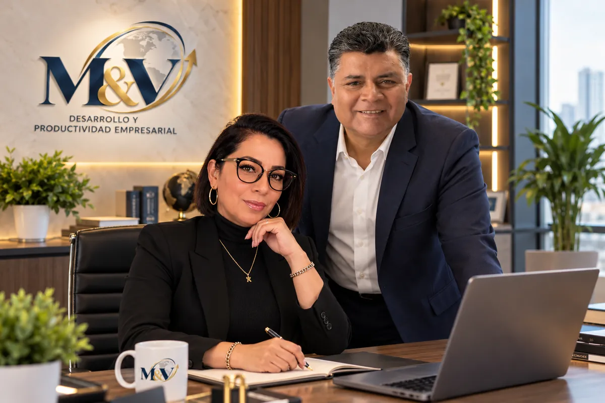
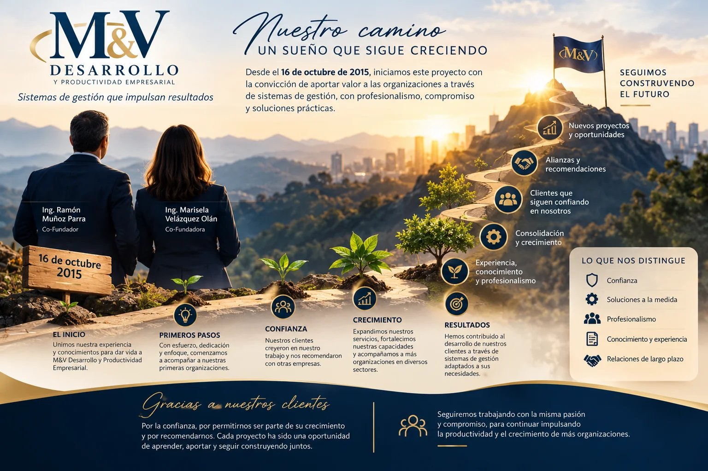

Cofundadora
Marisela Velázquez Olán
Auditor Líder
- Consultor e Instructor en Sistemas de Gestión
- Auditorías · Consultoría · Capacitación
Consultoría · Auditoría · Capacitación
Acompañamos a su organización en la implantación, mantenimiento, auditoría y formación de Sistemas de Gestión para la Calidad, Ambiental, Seguridad y Salud en el Trabajo, Inocuidad Alimentaria, Automotriz, Dispositivos Médicos, Cosméticos, Seguridad de la Información y más.
de experiencia de nuestros auditores
de experiencia de nuestros instructores en Sistemas de Gestión
Auditores de primera, segunda y tercera parte
acompañando a organizaciones desde el 16 de octubre de 2015
Nuestros servicios
Diversas soluciones en gestión y mejora continua para que su organización sea más productiva, rentable y competitiva, y logre la certificación y/o acreditación de sus sistemas y procesos.
Calidad, inocuidad, cadena de custodia forestal, automotriz, responsabilidad social, aduanera, ambiental, seguridad y salud en el trabajo, gestión de riesgos, cosméticos, dispositivos médicos y laboratorios clínicos.
La auditoría interna es parte esencial de un Sistema de Gestión antes, durante y después de una certificación. Nuestros auditores, con más de 20 años de experiencia, aportan valor agregado y proponen la mejora continua.
Fortalecemos su capital humano con formación soportada en la práctica de la consultoría y la auditoría, con instructores de alto nivel profesional y más de 16 años de experiencia.
De la estrategia a la operación: diagnóstico, documentación, capacitación, auditoría interna y acompañamiento hasta la certificación, con visitas presenciales y asesoría remota.
Sectores
Calidad, ambiente, personas y procesos trabajando juntos para lograr resultados.
Inocuidad en toda la cadena alimentaria, empaques y almacenaje.
ISO 22000 · FSSC 22000 · BRCGS · NOM-251Prevención de defectos y reducción de desperdicios en la cadena de suministro.
IATF 16949Calidad con enfoque regulatorio en todo el ciclo de vida del dispositivo.
ISO 13485Buenas Prácticas de Fabricación para productos seguros y de calidad.
ISO 22716Competencia, imparcialidad y resultados confiables en ensayo y calibración.
ISO/IEC 17025Trazabilidad de productos forestales desde el bosque hasta el consumidor.
FSC Cadena de CustodiaCalidad, ambiente y seguridad y salud en el trabajo para cualquier organización.
ISO 9001 · ISO 14001 · ISO 45001Protección de la información y gestión de riesgos de seguridad.
ISO/IEC 27001Normas y estándares
Conozca qué es cada norma, a quién aplica y qué beneficios aporta a su organización.
Bienvenidos
Agradecemos la oportunidad de su interés para conocer nuestros servicios. Somos una empresa enfocada a:
“Ciertamente una Fortaleza y Ventaja Competitiva que nos Diferencia”
Nuestros servicios están orientados al desarrollo de las estrategias que nos ayuden a cumplir con los objetivos de las Organizaciones, integrándonos como un equipo exitoso, estableciendo con ello una relación mutua Ganar-Ganar.

Ser la mejor opción a corto plazo para las organizaciones enfocadas a generar Sistemas de Gestión.
Estamos convencidos de que su empresa está en las mejores manos para alcanzar exitosamente sus objetivos estratégicos.
Nuestro equipo
Cofundadora
Auditor Líder
Cofundador
Ing. Químico Industrial · Auditor Líder
Nuestro camino
Desde el 16 de octubre de 2015 iniciamos este proyecto con la convicción de aportar valor a las organizaciones a través de sistemas de gestión, con profesionalismo, compromiso y soluciones prácticas.
Unimos nuestra experiencia y conocimientos para dar vida a M&V Desarrollo y Productividad Empresarial.
Con esfuerzo y dedicación acompañamos a nuestras primeras organizaciones; nuestros clientes creyeron en nuestro trabajo y nos recomendaron.
Expandimos nuestros servicios, fortalecimos nuestras capacidades y acompañamos a más organizaciones en diversos sectores.
Hemos contribuido al desarrollo de nuestros clientes a través de sistemas de gestión adaptados a sus necesidades.
Gracias a nuestros clientes por permitirnos ser parte de su crecimiento. Seguimos trabajando con la misma pasión y compromiso.

Formación
Fortalecemos a su capital humano con formación soportada en la experiencia de nuestros instructores en la práctica de la consultoría y las auditorías.
Mejora continua
Para obtener una certificación exitosa le acompañamos desde el diagnóstico hasta el seguimiento de los hallazgos de auditoría.
Conozca nuestra metodologíaNosotros le realizamos una visita. La solicitud no le compromete a adquirir nuestros servicios y no tiene ningún costo.
Contacto
De antemano le agradecemos el interés por nuestros servicios. Complete el formulario para hacerle llegar la Propuesta Económica y/o agendar la Visita “Gratis” para realizar el diagnóstico de su organización.
Esta solicitud NO le compromete a adquirir nuestros servicios y NO tiene ningún costo.